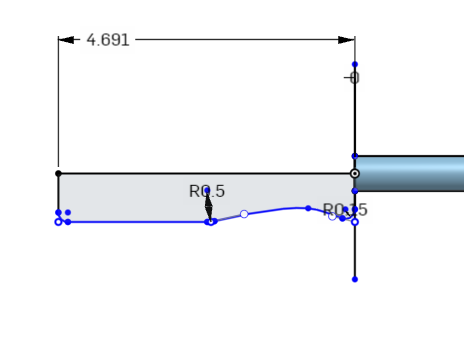

細部設計與BOM << Previous Next >> Issue
細部設計與BOM << Previous Next >> Issue
Experience
W10
將實習任務三 Building a clean model tutorial 所需的零件利用 onshape 繪製出。
w11
利用 V-rep 模擬 Building a clean model tutorial。
W12
分配工作任務。
W13
W14
w15
修改球桿握把的部分，以方便標註的圓弧線斷取代雲形線。
熟悉 onshape 工程圖介面及各項功能。
↓雲形線
 
改為弧線↓


w16
繪製零件 BOM 、零件尺寸圖、零件部分組裝圖、3D 零組件爆炸圖。
細部設計與BOM << Previous Next >> Issue